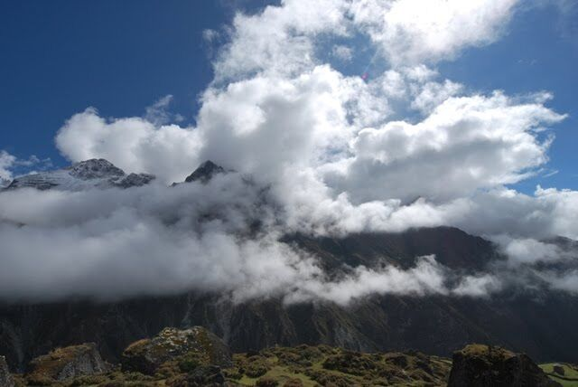
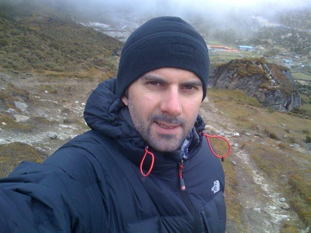
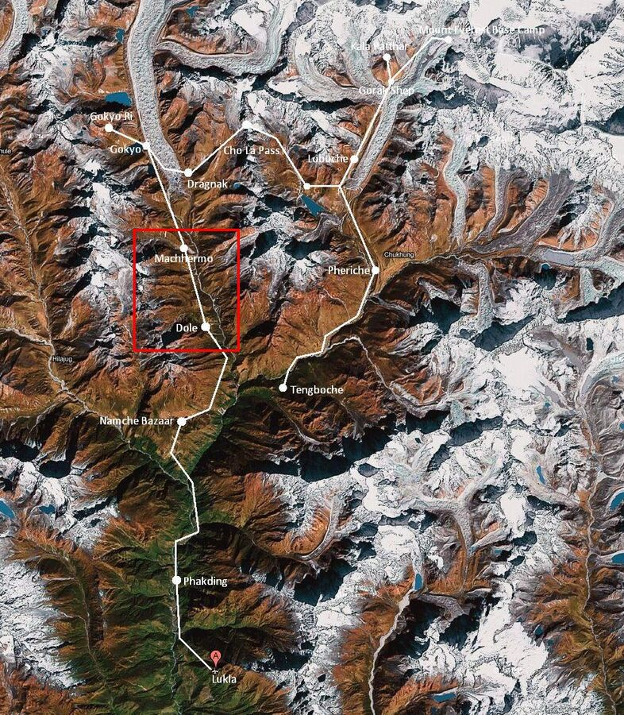

Bugün yaklaşık 400 metre yükseklik farkıyla kısa bir yolumuz vardı. Molasız 3 saat sürdü. Hedefimiz 3–4 lodge'dan oluşan küçük Machermo köyüydü. 8:30'da yola çıktığımız için öğle yemeğine yetiştik.
Yol başta epey dikti, sonra neredeyse düzdü. Bu da yürümeyi kolaylaştırdı. Bu arada henüz hiç kas ağrım olmadı.

Artık ağaç sınırının üzerinde yürüdüğümüz için rüzgâr çok sert esiyor. Güneş parladığında hava hoş bir şekilde ılık ve tişörtle yürüyebiliyorsunuz, ama güneş kaybolur kaybolmaz polar ceket olmadan olmuyor. Son tırmanışta keşke kaz tüyü montum olsaydı dedim. Rüzgâr ve bulutlar adeta dağa doğru fırlıyor ve buz gibi. Burada her yer sisli. Çiftlik evlerini görebiliyorsunuz ama etraftaki dağlar bulutların içinde.

Öğle yemeğinden sonra daha iyi aklimatize olmak için biraz daha etrafta tırmandık. Ne de olsa 4.400 m ile Grossglockner'den (3.800 m) daha yüksekteyiz ve Alpler'in en yüksek noktası Mont Blanc'dan (4.808 m) pek uzak değiliz.
Yarın burada kalacağız. Aklimatizasyon gününü Gokyo'da yapmayı konuşmuştuk ama muhtemelen yine de burada kalacağız.
Saat şimdi 14.00. Biraz dinlenip sonra duş alacağım. Bunun için dışarıdaki cereyanlı küçük bir odaya bir tencere sıcak su getiriliyor.
16.00 civarında hafif bir baş ağrısıyla uyandım. Sonra duş aldım. Su sıcak olsa da epey soğuktu. Her şey çok hızlı oldu ama önemli olan saçların yıkanmış, vücudun temiz olmasıydı. Neyse ki Namche Bazaar'da o çabuk kuruyan havlulardan almıştım. Pamuklu havlumla olmazdı. Burada zaten hiç kurumuyor. Hatta nemi çektiğini bile düşünüyorum.
Duştan sonra diğerlerinin yanına salona geçtim. Nihayet yanan sobanın etrafında oturuyorlardı. Orada saçımı ve havluyu kurutabildim. Sohbet ettik ve sonra yemek sipariş ettik. Dışarıda yavaş yavaş hava karardı ve soğudu.
Yemek fena değildi. Özel bir şey yok. Bu sırada aklimatizasyon gününü yine de burada, Machermo'da geçirmeye karar verdik.
Yemekten sonra 2 el Yahtzee oynadık. Çok eğlenceliydi. Zavallı Harald'ın bugün zarları hiç iyi değildi. Eh, aşkta şanslıdır o zaman.
Şimdi, saat 21 civarında, herkes yatıyor. Dışarıda bardaktan boşanırcasına yağmur yağıyor. Şansımız varsa yarın gökyüzü açık olur. O zaman erken kalkıp manzarası güzel bir tepeye yaklaşık 300 m tırmanacağız. Bu, yaklaşan Gokyo Ri tırmanışı için de iyi bir aklimatizasyon antrenmanı.
Maalesef 2 gündür telefonumuz çekmiyor, yarın da çekmeyecek. Yeşim'i ve küçük Dicle'yi çok özlüyorum. Özellikle şimdiki gibi biraz sakin olduğunda. Yoksa yürürken epey konsantre olmanız gerekiyor ve bu insanın aklını dağıtıyor. Sizi öpüyor ve kucaklıyorum, sevdiklerim.
